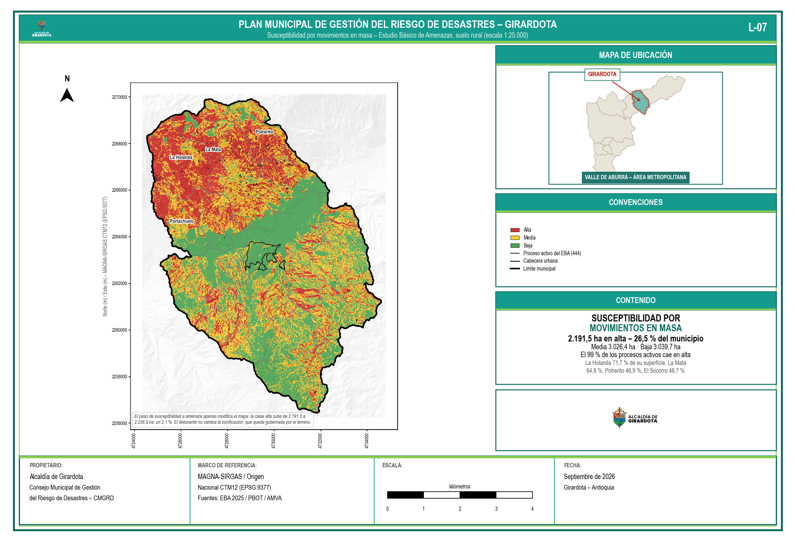
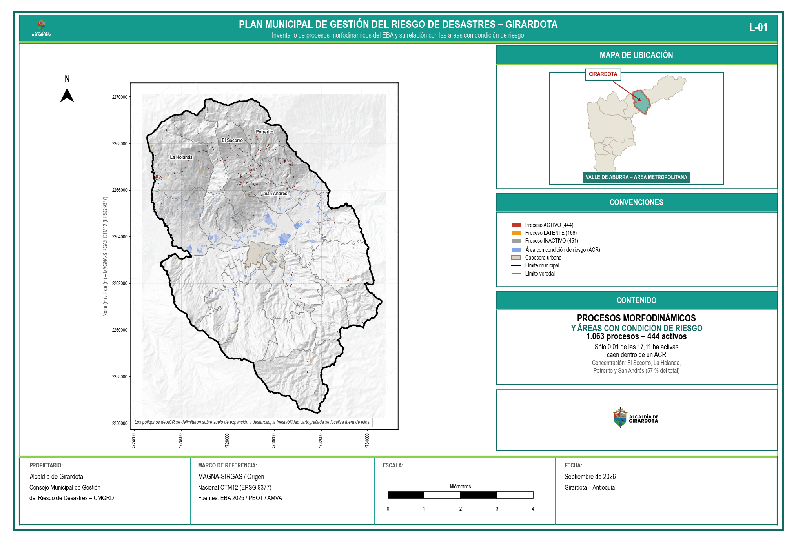

Los movimientos en masa son el fenómeno de mayor frecuencia y de mayor afectación recurrente en Girardota. El evento de referencia es la emergencia del 27 y 28 de mayo de 2023, cuando el municipio registró más de cien movimientos en masa que afectaron nueve veredas —cuatro de ellas quedaron incomunicadas— y dejaron más de un centenar de familias damnificadas. La combinación del régimen bimodal de lluvias, la fuerte pendiente de las laderas oriental, occidental y sur, la pérdida de cobertura vegetal protectora y la ocupación de laderas intervenidas y bordes de escarpe configura un escenario que se reactiva en cada temporada de lluvias y que se intensifica en los años de fenómeno de La Niña. Los eventos suelen afectar viviendas de autoconstrucción, vías y bancas veredales, con pérdidas que, aunque puntuales, son acumulativas y de costosa rehabilitación. El Estudio Básico de Amenazas de diciembre de 2025 delimita 61,71 hectáreas de áreas con condición de riesgo por movimientos en masa —zonas de amenaza alta ya ocupadas—, y las veredas con mayor población expuesta son Portachuelo, San Esteban, San Diego y El Paraíso.
Los movimientos en masa son desplazamientos ladera abajo de masas de roca, suelo o detritos por efecto de la gravedad (Varnes, 1978; PMA-GCA, 2007). En Girardota predominan los deslizamientos —rotacionales y traslacionales—, acompañados de caídas de roca o suelo, flujos y reptación. El PBOT 2025 zonifica amenaza alta y media en los bordes oriental, occidental y sur del perímetro urbano —en colindancia con los barrios Juan XXIII, Girardota La Nueva, El Llano, La Ferrería y Santana al occidente, y El Naranjal, Guayacanes, El Paraíso y Guaduales al oriente—, en el centro de la cabecera entre las quebradas El Matadero y El Tábano, en el sector norte en cercanía de áreas industriales y predios mineros, y en los suelos urbanos aislados de Jamundí, Las Cuchillas y San Diego. En el suelo rural, varias veredas de alta pendiente presentan procesos activos.
Están expuestas las viviendas de autoconstrucción sobre cortes y rellenos en los barrios de ladera y en las veredas de alta pendiente, las vías y bancas veredales, los acueductos veredales, las redes eléctricas y los predios mineros del norte. La vulnerabilidad física es alta por la baja calidad estructural de las viviendas y la ausencia de obras de contención y de manejo de aguas; la social y económica, por tratarse en buena parte de hogares de menores ingresos con escasa capacidad de recuperación autónoma; la ambiental, por la pérdida de coberturas protectoras; y la institucional, por las limitaciones de personal y movilidad del cuerpo de bomberos y por la debilidad histórica del control urbanístico.
Lesionados, atrapamientos y eventuales fallecimientos; destrucción o inhabitabilidad de viviendas y pérdida de enseres; daño a vías, acueductos, redes eléctricas y obras de contención; pérdida de cultivos e infraestructura agropecuaria; aislamiento de veredas por pérdida de banca vial; y pérdida de suelo y cobertura con aporte de sedimentos a las quebradas.
A cinco años se espera mayor recurrencia de eventos detonados por lluvias intensas y la activación de procesos en laderas recién intervenidas y vías veredales. A diez años, mayor exposición por expansión urbana y minera si no se controla la ocupación de laderas. A veinte años, bajo escenarios de lluvias extremas más frecuentes, se prevé la ampliación territorial de la amenaza alta y una mayor probabilidad de eventos encadenados —deslizamiento, represamiento de cauce y avenida torrencial—. De no intervenir, crecen tanto la amenaza como la vulnerabilidad.
El cruce del inventario de procesos morfodinámicos del Estudio Básico de Amenazas con la división veredal arroja 1.050 procesos que ocupan 50,69 hectáreas: 442 activos con 17,11 hectáreas, 444 inactivos con 27,49 y 164 latentes con 6,01. Los procesos inactivos son de mayor tamaño individual —corresponden a cicatrices antiguas de mayor magnitud— y su reactivación bajo lluvias extremas constituye uno de los escenarios prospectivos que el Plan debe mantener bajo vigilancia. Las veredas con mayor superficie de procesos activos son La Holanda con 4,02 hectáreas, El Socorro con 3,10, Potrerito con 2,59 y San Andrés con 2,04. Conviene advertir que esta relación no coincide con la de mayor población expuesta —Portachuelo, San Esteban, San Diego y El Paraíso—, porque una y otra miden cosas distintas: la exposición cruza la amenaza con la población, mientras que el inventario registra dónde se está moviendo el terreno con independencia de quién viva allí. El Plan atiende ambas relaciones con instrumentos distintos: instrumentación y estabilización en las primeras, reducción de la vulnerabilidad en las segundas.
| Proceso | Medidas |
|---|---|
| Conocimiento | Estudios detallados de amenaza (1:2.000–1:5.000) en sectores priorizados; inventario de viviendas y equipamientos en amenaza alta y media; instrumentación de laderas críticas y umbrales de lluvia articulados con el SIATA; red de observadores comunitarios. |
| Reducción correctiva (AbE) | Obras de bioingeniería —trinchos vivos, fajinas, empradizado y revegetalización de taludes con especies nativas—; manejo de aguas con cunetas, filtros y drenajes; obras geotécnicas de contención combinadas con cobertura vegetal; reforzamiento o reasentamiento de viviendas según el caso. |
| Reducción prospectiva | Prohibición de construcción en pendientes superiores al 100 %; incorporación de la amenaza alta no mitigable como suelo de protección; consolidación del Cinturón Verde como amortiguador de laderas; Pagos por Servicios Ambientales. |
| Manejo | Protocolos del CMGRD y PMU; sistema de alerta por umbrales de lluvia; capacitación, equipamiento y entrenamiento de organismos de socorro; albergues y centros de reserva identificados. |

